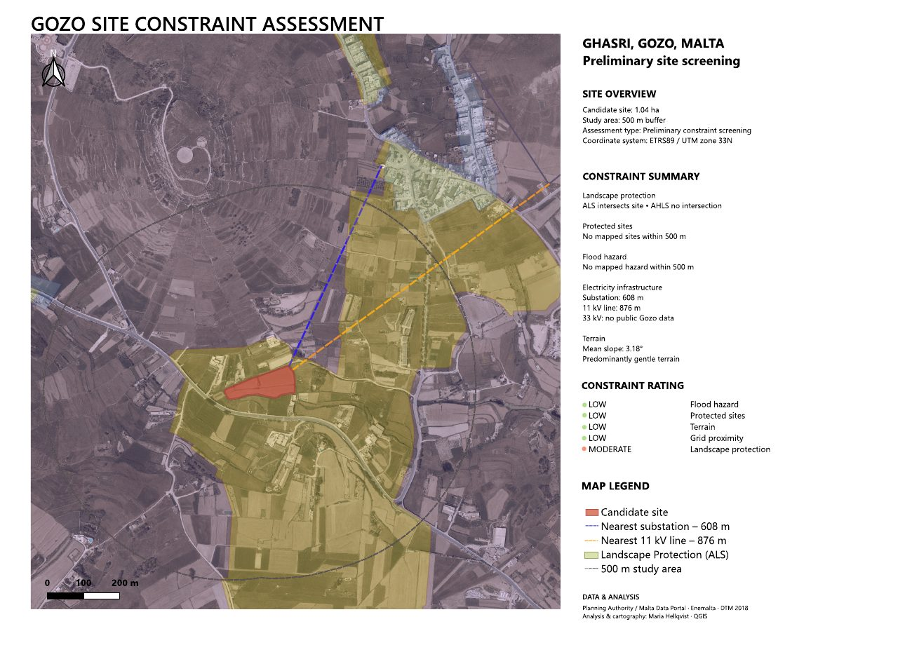
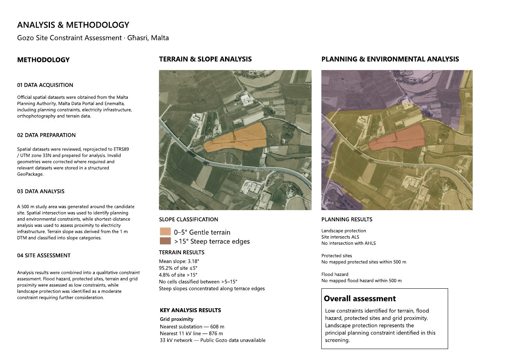

◈
GIS & Geospatial Analysis
Spatial data, mapping, site constraints and geographic information workflows.
View GIS projects →A portfolio of geospatial projects, Swedish-language proofreading and structured content evaluation. Combining technical training with a careful eye for detail.
Explore my work ↓Spatial data, mapping, site constraints and geographic information workflows.
View GIS projects →Proofreading, localisation checks and structured evaluation of Swedish-language content.
View language samples →Preliminary site screening of a 1.04 ha candidate site using a 500 m study area. The assessment combines planning and environmental constraints, terrain analysis and proximity to electricity infrastructure.

Method: Official spatial datasets were reviewed, reprojected to ETRS89 / UTM zone 33N and prepared in a GeoPackage. Spatial intersection and shortest-distance analyses were used alongside slope analysis derived from a 1 m DTM.
Findings: Mean slope was 3.18°; the nearest substation was 608 m away and the nearest 11 kV line 876 m away. The candidate site intersects an Area of Landscape Sensitivity (ALS), while no Area of High Landscape Sensitivity (AHLS) intersection was found. Landscape protection was the principal constraint identified in this preliminary screening.

QGIS Spatial analysis Slope analysis Cartography
View full project report (PDF) ↗Preliminary screening only; not a planning approval or final suitability determination. Data sources: Planning Authority, Malta Data Portal, Enemalta and DTM 2018, as credited in the report.
Selected self-directed samples demonstrating Swedish proofreading, editorial judgement and quality assurance. These are simulated exercises, not commissioned client work.
Brief: Proofread a Swedish article about digital services for spelling, grammar, punctuation and clarity while preserving its original message and tone.
Digitala tjänster och användarvänlighet
Digitala tjänster och användarvänlighet
Corrections included informal pronouns ( dom → de ), agreement ( anpassad → anpassat ; en → ett ), compound spelling ( lätt tillgänglig → lättillgänglig ), punctuation and clearer phrasing. The reflexive pronoun was corrected from deras to sin in the final paragraph.
Terminology consideration: I proposed funktionsvariationer as a potentially more inclusive-sounding alternative to funktionsnedsättningar . Because the latter is established terminology in Swedish accessibility contexts, the final version retains it; a change would be discussed with the client and checked against their style guide.
Swedish proofreading Grammar Editorial review Terminology
Reviewing Swedish UI text for natural phrasing, consistency and clarity.
Sample in preparationComparing example responses against a clear assessment rubric.
Sample in preparationTraining in GIS and technical illustration, combined with freelance experience in Swedish-language content and AI-related evaluation projects. Interested in accuracy, information quality and clear communication.
Contact details and links can be added before publication.